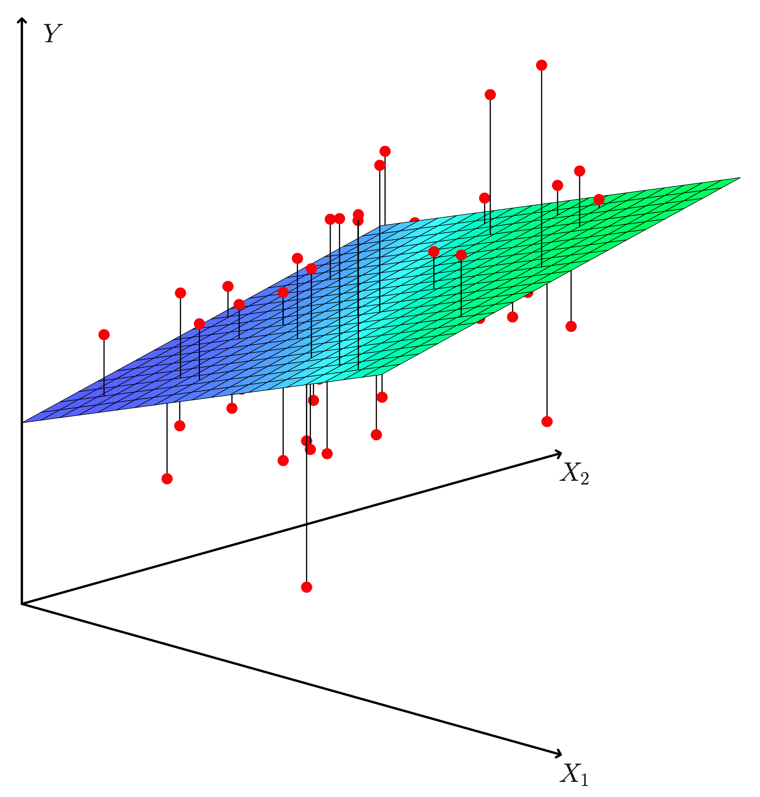

5.1 Linear Regression Model
Unlike classification problems, the target variable in regression is continuous, but it inherits the basic idea of classification problems, which is to predict the target variable using a weighted combination of feature variables, i.e. \[ y = w_0 + w_1 x_1 + \dots w_px_p + \epsilon \] where \(\epsilon\) is a error term. The error term contains many things. It could be measurement errors, or random noise, or all the variations that can not be explained by all the feature variables. For the latest case, it also means we need more feature variables for a better prediction of the target variable.
Obviously, we have to apply some methods (algorithm) to learn the model, i.e. estimate the coefficients \(w_0, w_1, \dots, w_p\) from a data set. Here, we mainly discuss two methods, least square methods and maximum likelihood method. Eventually, the two methods are equivalent for a regression problem, however, it is still necessary to explain maximum likelihood method for understanding logistic regression in lecture 7.
5.1.1 Least Square Method
Least Square method was proposed by the famous mathematician Gauss. He applied this method for data analysis to accurately predict the time of the second appearance of the asteroid, Ceres. His idea is quite simple: to use data to find the optimal line, represented by two coefficients, in order to minimize prediction errors, see the plot below.
Suppose that we have a set of paired observations, \((y_1,x_1), \dots, (y_n, x_n)\), then the mathematical formulation is \[ \hat{w}_0, \hat{w}_1 = \arg\min_{w_0, w_1} \sum_{i=1}^n(y_i-\hat{y}_i)^2 \] where \(\hat{y}_i = w_0 + w_1x_i\).
The solution of this optimization problem is \(\widehat{w}_1=\frac{\sum_{i=1}^N(x_i-\overline{x})(y_i-\overline{y})}{\sum_{i=1}^N(x_i-\overline{x})^2}\), and \(\widehat{w}_0=\overline{y}-\widehat{w}_1\overline{x}\)
5.1.2 Matrix Form ( NE )
When we consider multiple feature variables in a linear regression model, the above calculation formula becomes somewhat cumbersome and inefficient. To compute all the regression coefficients more effectively, we typically need to consider the matrix form of the model. By expressing the linear regression model in matrix form, we can simplify the computation and make it more efficient. The model can be written as: \[ \textbf{y} = \textbf{Xw} + \epsilon \] where: - \(\textbf{y}\) is the vector of observed values (target variable), \(\textbf{y} = (y_1, \dots, y_n)^{\top}\), - \(\textbf{X}\) is the design matrix, which contains the feature variables (including a column of ones for the intercept), i.e. \[ \textbf{X}= \begin{pmatrix} 1 & x_{1,1} & \cdots & x_{1,p}\\ \vdots & \vdots & \ddots & \vdots \\ 1 & x_{n,1} & \cdots & x_{n,p} \end{pmatrix} \]
- \(\textbf{w}\) is the vector of regression coefficients, \(\textbf{w} = (w_0, w_1, \dots, w_p)^{\top}\)
- \(\boldsymbol{\epsilon}\) is the vector of errors, \(\boldsymbol{\epsilon} = (\epsilon_1, \dots, \epsilon_n)^{\top}\).
To estimate the regression coefficients , we use the least squares method, which minimizes the sum of squared errors. The solution to this optimization problem is: \[ \widehat{\textbf{w}}=(\textbf{X}^{\top}\textbf{X})^{-1}\textbf{X}^{\top}\textbf{y} \]
This formula provides an efficient way to calculate the coefficients for a linear regression model with multiple features. Using matrix operations not only simplifies the calculations but also allows for faster computation, especially when dealing with large data sets or numerous features. Thus, the matrix form of the model allows for a more streamlined approach to regression analysis, making it easier to implement and compute the necessary coefficients, particularly when working with multiple variables.
5.1.3 Maximum Likelihood Method
Different from least square method, next, we are going to reexamine the regression model from the perspective of probability models. To do so, we assume the error term \(\epsilon\) is normally distributed, \(\epsilon \sim \mathcal{N}(0, \sigma^2)\). Based on this assumption, the target variable is normally distributed conditional on feature variables. Therefore, we essentially predict the expected value of the target variable conditional on \(X_1, \dots, X_p\) as a linear model, i.e.

\[ \text{E}(Y | X_1, \dots, X_p) = w_0 + w_1 X_1 + w_2 X_2 + \dots + w_p X_p \] Based on the normality assumption, another estimation method, MLE, for coefficients can be discussed.
MLE of regression model: Under the normality assumption, we have \(y_i \sim \mathcal{N}( w_0 + w_1x_1 , \sigma^2)\). If you remember the secrete message behind the normal distribution, the likelihood of each observation, \(y_i\), is inversely proportionally to the distance to the expected value, i.e. \[ f( y_i | w_0, w_1, \sigma^2 ) \propto -(y_i - (w_0 + w_1x_1 ) )^2 \] Therefore the likelihood function of the sample \(\left\{ y_i, x_i \right\}_{i=1}^n\) is \[ \log \left( L( w_0, w_1, \sigma^2 | (y_i, x_i) ) \right) \propto -\sum_{i=1}^n (y_i - (w_0 + w_1x_1 ) )^2 \]
Notice that, on the LHS, it is sum square of residual. Therefore, minimize sum square of residuals is equivalent to maximize the log likelihood function. In other words, the two methods are equivalent.
5.1.4 Model Evaluation
Unlike classification problems, model evaluation for regression problems is quite straightforward. From the purpose of regression, our ultimate goal is to use feature variables to estimate a continuous target variable. A good regression model naturally minimizes prediction error. Therefore, we typically use the mean squared error (MSE) of the model predictions for evaluation. That is \[ \text{MSE} = \frac{1}{N} \sum_{i = 1}^N \left( y_i - \hat{y}_i\right)^2 \]
where \(\hat{y}_i\) is the prediction of the \(i\)th case, i.e. \(\hat{w}_0 + \hat{w}_1 x_{i,1} + \dots + \hat{w}_p x_{i,p}\), and therefore \(y_i - \hat{y}_i\) is the prediction error of the \(i\)th case. To gain a more intuitive understanding, people often use RMSE (Root Mean Squared Error), i.e. \(\text{RMSE} = \sqrt{\text{MSE}}\). Sometimes, people also use Mean Absolute Error (MAE) to evaluate a regression model. \[ \text{MAE} = \frac{1}{N} \sum_{i = 1}^N | y_i - \hat{y}_i| \] For all metrics, lower value indicates better model performance.
Quiz: Do you know why we don’t use the average errors, i.e. \(\frac{1}{N} \sum_{i = 1}^N \left( y_i - \hat{y}_i\right)\) to evaluate a regression model?
Tips: The simplest regression model is \(y = w_0 + \epsilon\) and the estimation is \(\hat{w}_0 = \bar{y}\), i.e. \(\hat{y} = \bar{y}\).
5.1.5 Loss function
The attentive among you may have noticed that the objective function of the least squares method in regression problems is the same as the model evaluation metric, MSE. From another perspective, we can understand the estimation of regression models as finding a set of regression coefficients that minimize the MSE. In machine learning, estimating regression coefficients is framed as an optimization problem, where MSE is interpreted as the objective function of this optimization problem, also referred to as the model’s loss function. For a regression problem, it is called MSE loss: \[ \mathcal{L} = \frac{1}{N} \sum_{i=1}^N (y_i - \hat{y}_i)^2 \] For different problem, we could have different loss functions, for example, Huber loss, cross entropy loss, hinge loss. We will explore this further in the lab exercises. This concept, connecting to Maximum Likelihood Estimation, will reappear and be discussed again in the context of logistic regression models.